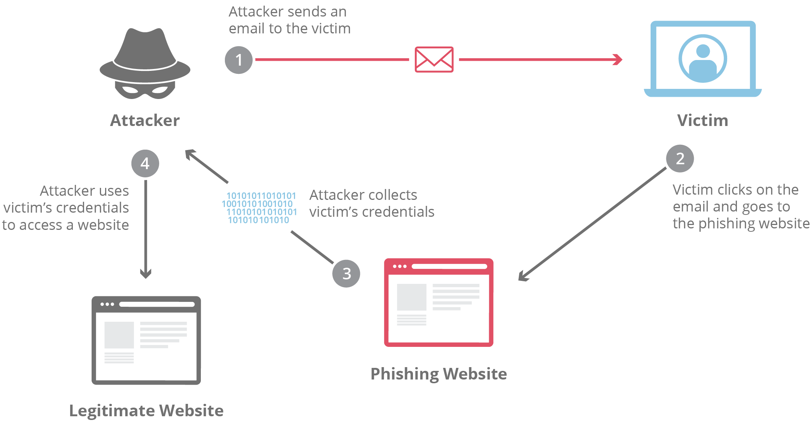
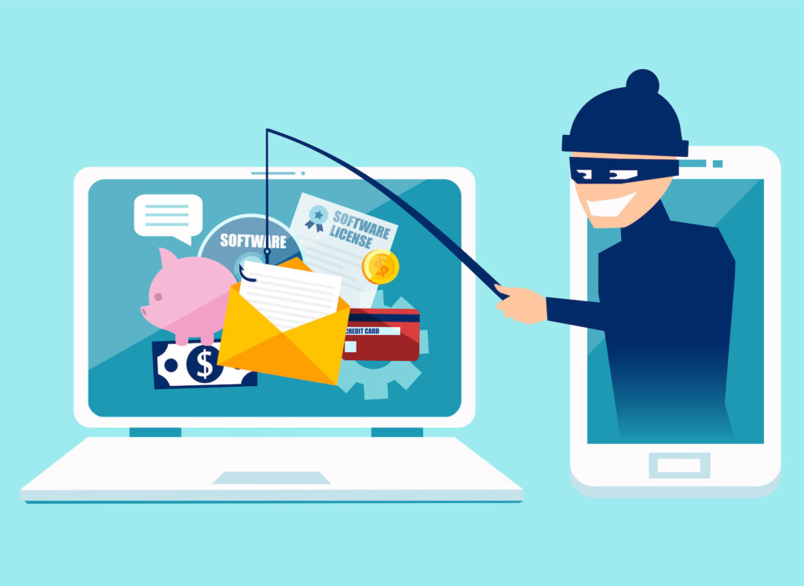
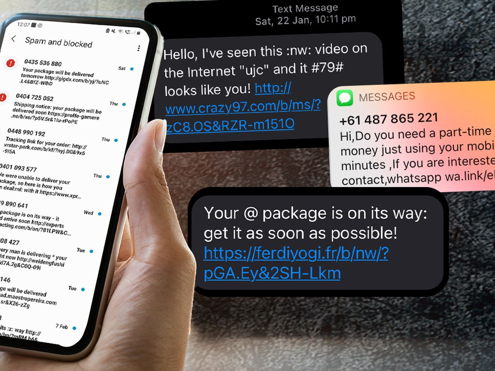

What is Phishing?
Phishing is a type of online scam where criminals send fraudulent messages to trick you into revealing sensitive information such as usernames, passwords, and credit card numbers. “Phishing” refers to an attempt to steal sensitive information by masquerading as a reputable source with an enticing request, an attacker lures in the victim in order to trick them, similarly to how a fisherman uses bait to catch a fish.
How to Identify Phishing Links
Be cautious of links in emails, texts, or messages that you receive from unknown sources. Always hover over links to check their legitimacy. Look for signs like misspelled URLs, unfamiliar domain names, and unsecured connections. Phishing sites mimic legitimate websites to steal your information. Always double-check the URL, look for HTTPS, and verify the site's security certificate before entering any personal information.
Whenever you come across a phishing link our SmartGuard extension would check it for autheniticity and protect you from phishing attacks. Or else you can paste the link on our site.
Types of Phishing Attacks
1. Phishing SMS (Smishing)
SMiShing, also known as SMS Phishing, can be classified as a type of social engineering attack. Unlike email phishing, which uses emails to carry out attacks, SMiShing is done through text messages. A typical example of SMiShing is when a threat actor impersonates a legitimate entity such as your organization, an IT service/security admin, a bank, a government agency, an e-commerce site, a package delivery service, etc., to trick you into divulging your username/passwords or other sensitive information.
2. Email phishing

Phishing attacks, often delivered via email spam, attempt to trick individuals into giving away sensitive information and/or login credentials. Most attacks are "bulk attacks" that are not targeted and are instead sent in bulk to a wide audience. The goal of the attacker can vary, with common targets including financial institutions, email and cloud productivity providers, and streaming services. The stolen information or access may be used to steal money, install malware, or spear phish others within the target organization. Compromised streaming service accounts may also be sold on darknet markets. This type of social engineering attack can involve sending fraud emails or messages that appear to be from a trusted source, such as a bank or government agency. These messages typically redirect to a fake login page where the user is prompted to enter their login credentials.
3. Spear Phishing
Spear phishing is a targeted phishing attack that uses personalized emails to trick a specific individual or organization into believing they are legitimate. It often utilizes personal information about the target to increase the chances of success. These attacks often target executives or those in financial departments with access to sensitive financial data and services. Accountancy and audit firms are particularly vulnerable to spear phishing due to the value of the information their employees have access to.